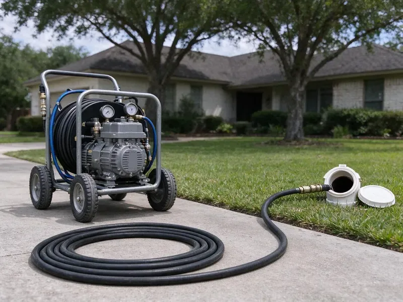

Hydro Jetting in North Little Rock, AR
Hydro jetting in North Little Rock, AR uses pressurized water to scour pipes back to full size, removing grease, scale and roots a cable misses.
- Pipe-Safe Pressure Settings
- Camera Inspection Before Jetting
- Eco-Friendly Method
- High-Pressure Technology

Blast Out Grease and Roots Once and for All With Hydro Jetting in North Little Rock, AR.
Our expert plumbers use professional hydro jetting equipment to restore full flow to your plumbing system.
Powerful Hydro Jetting for Tough Clogs in North Little Rock, AR
DGR Plumbing specializes in hydro jetting, a very effective method for clearing tough blockages and thoroughly cleaning your drain and sewer lines. This service is ideal for removing years of grease, scale, and root intrusion that commonly plague plumbing systems in North Little Rock, AR.
Our expertise includes:
- Clear grease, scale, and root intrusions.
- Pre and post jetting video inspection with recordings
- High-pressure water jetting for all pipe sizes

Additional Drain Services Services in North Little Rock, AR
From stubborn kitchen clogs to main sewer backups, our drain services in North Little Rock, AR restore full flow fast and keep it that way.


Customers
Why Choose DGR Plumbing for Hydro Jetting in North Little Rock, AR?
Choosing the right method for drain cleaning is crucial, especially with common issues like tree root intrusion and mineral buildup. Many municipal systems in Arkansas draw from lakes and reservoirs that supply fairly soft water, though some areas see harder water from groundwater sources. Hydro jetting is often the most complete and long-lasting solution.
- Root Removal, High-pressure water cleanly cuts through and flushes out tree roots that get into sewer lines.
- Grease & Sludge, It is the best method for breaking up and clearing heavy grease and sludge buildup typical of kitchen drains.
- Inspection First, We camera the line before jetting so pressure settings match the pipe condition.
Citywide Coverage
No matter where you are in North Little Rock, our trained plumbers are ready to bring hydro jetting equipment to resolve your most stubborn drain issues. We are dedicated to keeping drains flowing smoothly throughout the entire North Little Rock, AR area.
Experienced Team
Each member of our team is certified and stays up-to-date on hydro jetting techniques and safety protocols. You can trust their expertise to diagnose your drain issue correctly and apply the best solution.
Safety-First Approach
Before starting hydro jetting, we often conduct a camera inspection to make sure your pipes can handle the high pressure, preventing potential damage. This careful approach gives a safe and effective cleaning process for every job in North Little Rock.
Trusted Certified North Little Rock Plumbing Services Professionals
At DGR Plumbing, we take pride in providing certified plumbing services throughout North Little Rock, AR. Backed by recognized industry credentials, our experienced plumbers combine technical skill with genuine customer care. Whether it is repair, installation, or maintenance, we follow strict safety and quality standards to deliver lasting results you can trust.
Call Us Now PHCC Plumbing Contractor Recognition
PHCC Plumbing Contractor Recognition Better Business Bureau (BBB) Accreditation
Better Business Bureau (BBB) Accreditation Angi Certified Pro
Angi Certified Pro ISO 9001 Quality Management Certification
ISO 9001 Quality Management CertificationThorough Hydro Jetting Services in North Little Rock, AR
Emergency Hydro Jetting in North Little Rock, AR
A completely backed-up drain or sewer line requires immediate attention. DGR Plumbing offers emergency hydro jetting across North Little Rock, AR, to address critical blockages quickly. Our technicians are available to respond promptly, minimizing water damage and restoring your plumbing as soon as possible. We understand that some clogs just can't wait.

Root Cutting With Hydro Jetting in North Little Rock
Specialty root-cutting nozzles spin or use focused streams to slice through fine roots inside a sewer. This is useful on root hairs that a cable saw can leave behind. Roots from yard trees and shrubs often enter at clay pipe joints or cracks. Jetting clears them out and gives a clean view of each entry point on camera. That helps you decide whether lining or a spot repair is the next step.
Sewer Line Descaling with Hydro Jetting in North Little Rock
Over time, mineral deposits and other materials can build up on the interior walls of sewer lines, forming a tough scale. This reduces pipe diameter and can lead to repeat clogs. Many municipal systems in Arkansas draw from lakes and reservoirs that supply fairly soft water, though some areas see harder water from groundwater sources. Hydro jetting is the most effective method for sewer line descaling, using powerful water jets to break down and flush away these mineral deposits, restoring the pipe's full carrying capacity and slowing future buildup.
Tree Root Removal with Hydro Jetting in North Little Rock
Tree roots are a common problem in North Little Rock, AR, especially where mature landscaping grows over older sewer lines. Roots can penetrate tiny cracks in pipes and grow, causing severe blockages. Hydro jetting uses a powerful stream to cut through and flush out these invasive roots. This method is far more effective than snaking for complete root removal and slowing their rapid regrowth.
Preventative Maintenance Hydro Jetting in North Little Rock, AR
Proactive hydro jetting can save North Little Rock, AR property owners from unexpected plumbing emergencies. For homes and businesses with a history of drain issues or those prone to specific types of buildup, scheduled hydro jetting is an smart preventative measure. By regularly removing scale, grease, and other debris before they cause a full blockage, you can lengthen the life of your pipes, avoid costly repairs, and maintain consistent drainage. We can set up a tailored maintenance schedule for your needs.
Hydro Jetting vs. Snaking Cost Comparison in North Little Rock, AR
While snaking might be cheaper upfront for simple clogs, hydro jetting offers a more thorough and long-lasting solution, often saving money in the long run for North Little Rock, AR residents. Snaking typically punches a hole through a blockage, leaving residue behind, which can lead to recurring clogs. Hydro jetting cleans the entire pipe, preventing future issues and reducing the frequency of service calls, making it a more cost-effective choice for persistent drain problems.
Sewer Line Hydro Jetting in North Little Rock
When your main sewer line has a blockage, it can affect all the drains in your North Little Rock home or business. Our sewer line hydro jetting service is equipped to clear even the most severe obstructions in these larger diameter pipes. We use high-definition cameras to inspect the line before and after jetting, confirming the blockage is completely removed and the pipe is clean. Rocky, shallow soil in hilly parts of Arkansas makes trenching harder and can raise the cost on sewer and water line replacements.

Preventive Maintenance Jetting in North Little Rock
If your line has a history of clogs, a maintenance plan can keep it clear. We schedule jetting every 12 to 24 months for homes and more often for busy commercial kitchens. Regular cleaning prevents the buildup from ever reaching the point of a backup. It also gives us a chance to camera the line and catch new problems early. Maintenance customers get priority scheduling.
Hydro Jetting Near Me in North Little Rock, AR
Searching for hydro jetting near me usually means a clog keeps returning. Our local crew brings jetting equipment and a camera to North Little Rock homes and businesses, so we can diagnose and clean in one visit. You see the before and after footage.
If you are searching for hydro jetting near me in North Little Rock, AR, look no further than DGR Plumbing. Our local team is positioned to provide prompt and efficient service throughout the metro area. We understand the plumbing challenges of Arkansas homes and businesses and are ready to handle your toughest drain issues.
DGR Plumbing at a Glance
- Licensed and insured plumbers serving North Little Rock, AR
- 24/7 emergency service with same-day scheduling
- Upfront, flat-rate pricing before work begins
- 4.8-star rated by 871+ Arkansas customers
North Little Rock Map
North Little Rock Information
- Population
- 64,531
- Area codes
- 501/870/479
- Service area
- North Little Rock and communities within 40 miles
- Nearby
- Sherwood, Little Rock, Benton, Conway
Mineral scale bonds with kitchen grease inside pipes, so hydro jetting is often the best way to restore full flow in older lines in North Little Rock, AR. Many municipal systems in Arkansas draw from lakes and reservoirs that supply fairly soft water, though some areas see harder water from groundwater sources.
Expert Services
Trust our professionals for reliable DGR Plumbing solutions in North Little Rock, AR.
Our Specialized Plumbing Services in North Little Rock, AR
At DGR Plumbing, we provide a complete range of plumbing services across North Little Rock, AR. From leak detection to full system installations, our team ensures fast, precise, and affordable service for both residential and commercial properties. Explore our core services below:


How Our Hydro Jetting Process Works in North Little Rock, AR
Our hydro jetting process is complete and designed for maximum effectiveness while protecting your plumbing system.
Request a Quote
Call (501) 251-9708 and tell us about the clogs you are having and how often. We schedule an inspection and give you a price range.
Inspect the Pipe
We run a camera to check pipe material, condition and the cause of the blockage. This tells us the safe pressure and the right nozzle.
Jet and Verify
We jet the line in passes until the walls are clean and the water runs clear. A final camera run verifies the result.
Frequently Asked Questions About Hydro Jetting in North Little Rock
The cost of hydro jetting in North Little Rock, AR can range from $300 to $800, depending on the severity of the clog, the length and diameter of the pipe, and whether camera inspection is required. More complex jobs, like removing extensive tree roots or cleaning long commercial lines, may be on the higher end. We provide a clear estimate after assessing your situation.
Small consumer jetters exist, but they lack the pressure and flow of professional units. High-pressure water can also injure untrained users and harm fragile pipe.
Most residential jobs take 1 to 3 hours including inspection. Long commercial lines or heavy grease can take longer.
The length of a hydro jetting service in North Little Rock varies depending on the severity and location of the clog. A typical residential drain might take 1 to 2 hours, while a major sewer line or commercial job could take 3 to 4 hours or more. Our technicians work quickly to minimize disruption.
No permit is needed for jetting. If the inspection reveals damage that needs repair, permits may be required and we handle them.
A thorough jetting often keeps a line clear for a year or more, depending on use and roots. Lines with heavy root intrusion may require maintenance or a repair.
Hydro jetting is exceptionally effective against almost all types of clogs. It can break through solid obstructions like tree roots, flush out heavy grease and food buildup, clear mineral scale, and remove compacted sludge and debris that traditional snaking often leaves behind.
DGR Plumbing backs our hydro jetting in North Little Rock, AR. We typically offer a warranty on our workmanship, with the length depending on the service and nature of the clog. We will discuss all warranty details with you before starting any work.
What People Are Saying About Our Plumbing Experts?

Daniel K.
A pipe burst at 11 pm and they actually answered. The plumber showed up within the hour, shut everything down, and had us back to normal the next morning. Could not ask for more.
Emergency Plumbing · Benton, AR
Sofia M.
Two new toilets installed in one visit, no mess left behind, and the tech even adjusted a faucet he noticed was dripping. Fair pricing and really friendly.
Toilet Installation · North Little Rock, AR
Robert G.
The trenchless sewer replacement saved our front yard. They walked us through the camera inspection footage first so we knew exactly what we were paying for.
Sewer Line Replacement · Benton, ARLaura S.
I scheduled a water heater replacement, and the team made the process smooth and affordable. The new unit works perfectly, and they cleaned up after completing the job.
Water Heater Replacement · North Little Rock, AR
Emily R.
I called DGR Plumbing for plumbing repair, and the technician was fast, polite, and thorough. They explained the problem clearly and fixed it the same day. I will definitely hire them again. Highly recommended!
Plumbing Repair · Sherwood, ARJames P.
Our commercial plumbing system had a leak under the sink, and DGR Plumbing handled it professionally. The plumbers arrived quickly and restored everything without disruption to our customers.
Commercial Plumbing · Pine Bluff, AR